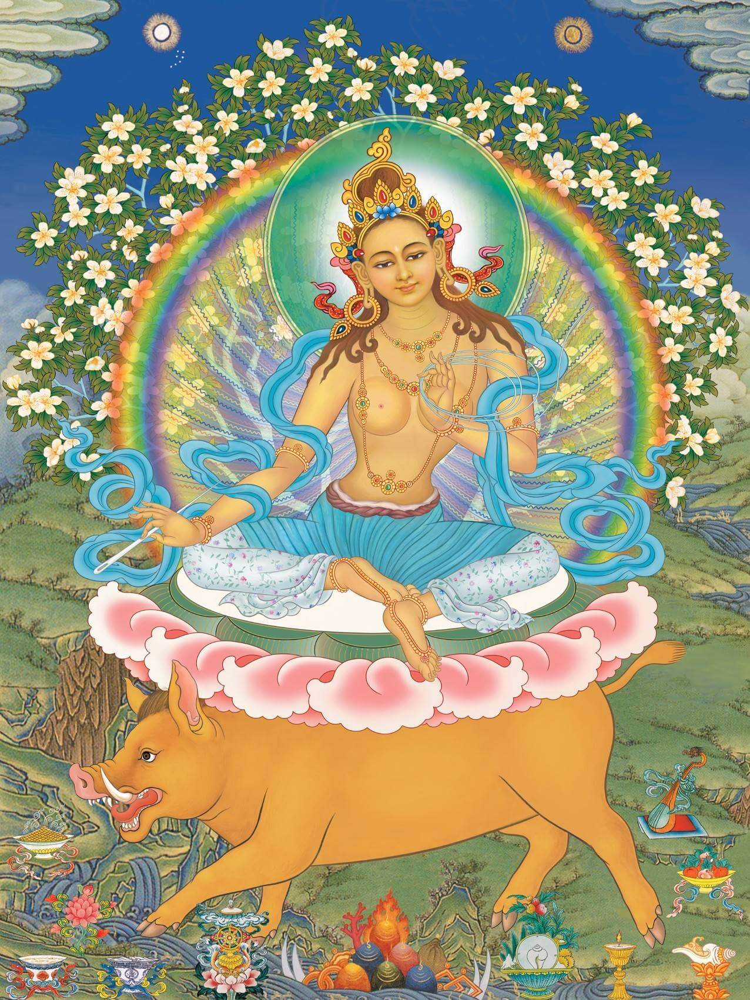

在金刚乘中，内相的皈依，三根本为所皈依之处。上师、本尊、空行三根本中，修行加持的根本是上师，修行成就的根本是本尊，修行事业的根本是空行。上师、本尊、空行实为加持、成就、事业的三根本。
一、上师
上师，是指善知识。上师有两种，一是外上师，一是内上师；即善知识有二种，一是外善知识，一是内善知识。凡是教导我们如何行善去恶，认识因果业报，明心见性，出离生死轮回，让生命得到究竟解脱的人和法，都是善知识。
1、外善知识——传授正法的上师
凡是弘扬正法，宣说善恶因果，引导众生进入出世间法的人，是外善知识。如佛菩萨及许多成就者，教导我们如何皈依，发菩提心，修持六度般若与善巧双运的种种道理和方法。让我们心中产生内善知识，生命得到真正依归，于轮回与涅盘间，获得究竟解脱。对我们而言，他们是外上师，外善知识。
2、内善知识——真正的上师
外善知识传授的一切正法，包括如何布施、持戒、忍辱、精进、禅定，产生世俗菩提心的方法，统称为善巧的法门。关于如何生起胜义菩提心，破除四边（有、无、有无皆是、有无皆不是等四边）的中观，称为般若，也就是智慧。世俗的善巧与胜义的智慧，两者双运，属于内善知识。
在修行的过程中，我们依靠外善知识传授的内善知识，修学善巧方便与般若智慧。才能从漫长的修行道上，进入成佛的快捷方式。
如果能长时间摄持这些法门，时时加以体悟运用。直到由自己心中，自然产生出大智慧和大悲菩提心的时候。这种内发性的大智与大悲，才是我们真正的上师。
3、皈依上师，是四皈依之首
金刚乘将上师放在四皈依之首，甚至弟子要将具德上师视之为佛。因为上师的本质是三世诸佛的总集体性，集佛法僧三宝于一体，总摄法报化三身。上师是过去佛的幻化，未来佛的根源，现在佛的摄政，所以上师总摄三世诸佛。
释迦牟尼佛已经涅盘了，能在现实五浊恶世中，普度有情的，只有上师。如果今生没有上师，我们就没办法亲耳听闻佛陀言教，难以实修证悟，上师的恩德胜过世间的一切，胜过佛陀。上师是带领我们走向究竟解脱成佛之路最重要的人。
二、本尊
作为一位金刚乘的行者，需要了解本尊的意义。藏文称本尊为“e dung”，“e”是指我们的心、意；“dung”是指将本尊和我们的心，以誓约坚定不渝地结合在一起。
本尊是从法身佛中，为利益众生，以报身的形象所显现的佛，包括寂静尊和忿怒尊。其中以慈悲、寂静、祥和的状态显现的本尊，是寂静尊；以比较凶猛、忿怒、恐怖的状态，显现出来的是“忿怒尊”。比如中阴百尊中就有42位寂静尊和58位忿怒尊。
每一种法门的主尊，是为本尊。修法的时候，必须要依赖本尊才能获得成就。如果主修一个法门，每天不间断，时时刻刻观想这最主要的一尊佛，即是修持本尊的意义。“修千百万尊佛，难成就一佛；修一佛却能成就千百万尊佛”，这是修法的诀窍。这并非说你不能再观想其他佛，而是不断提醒自己，在修行的过程中，要一门深入，专一修行。
修持哪一本尊，不是由别人去帮你寻找，而是由你自己决定的。如果你受了某个本尊的灌顶，表示你和此本尊有因缘。至于你是不是修这个本尊，还要看你有没有决心和时间修行而定。
如果我们将信心全放在某一尊佛的身上，透过自己专一的观想，让自己的心意完全和这尊佛合而为一。就像奶和水融合成奶水，最后分不出来哪一部分是奶，哪一部分是水。练习将你的心和这尊佛合为一体，就是所谓的“修本尊”。

三、空行
以慈悲力，在法界中幻化出许多形象来利益众生，消除众生以及修行者障碍的菩萨们，是修行人利益广大无边的众生，获得更高成就的来源，称为空行，有的称为勇父。我们虽然看不见他（她）们，但只要如法修行，他们无时无刻不在我们身边。不但设法保护我们不受外力的影响，还会帮助我们修行，更能成就世间及出世间的一切事业。
与此同时，在修行的过程中，我们还有护法们的陪伴。他们保护所有佛弟子成就，护佑坛城，帮助修行者排除干扰，消除障碍。
因为在修行的过程中，特别是修行人将要成就的时候，常会有很多不喜欢看到修行人成就的天子魔等，专门会设障碍来阻挠。比如，以前佛陀在清晨，睹明星即将成道时，就有许许多多的妖魔鬼怪来扰乱。
但是，只要能如法地修行，总有龙天护法会眷顾左右。一个虔诚修行人的身边，时时刻刻都有护法于无形中尽职尽责地帮助行者消除障碍，一直到我们成佛为止。
由此可知，上师，是一切加持的来源；本尊，是一切成就的来源；空行，是一切事业的来源，而护法，则能护佑行者消除所有一切的障碍。